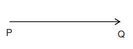

SUBJECTIVE QUESTION 1
What is science?
SOLUTION
Science (from the Latin scientia, meaning “knowledge”) may be defined as an organized body of knowledge about the natural universe and the processes by which that knowledge is acquired and tested.
SUBJECTIVE QUESTION 2
What are branches of science?
SOLUTION
In general, there are social sciences, which deal with human society and individual relationships, and natural sciences, which investigate the natural universe. In turn, the natural sciences are divided into the biological sciences (sometimes called life sciences), which are concerned with the study of living matter, and the physical sciences, which involve the study of nonliving matter.
SUBJECTIVE QUESTION 3
What are branches of physical science?
SOLUTION
Physical science is classified into five major divisions (Fig):
Physics, the most fundamental of the divisions, is concerned with the basic principles and concepts of matter and energy.
Chemistry deals with the composition, structure, and reactions of matter.
Astronomy is the study of the universe, which is the totality of all matter, energy, space, and time.
Meteorology is the study of the atmosphere, from the surface of the Earth to where it ends in outer space.
Geology is the science of the planet Earth: its composition, structure, processes, and history.
(The last three physical sciences are sometimes combined as Earth and Space Science.)
SUBJECTIVE QUESTION 4
What is matter?
SOLUTION
Everything that really exists in the world, on the Earth or out of it, is called matter. Various bodies surrounding us and the substances of which these bodies are composed are material. Sound, light, radio waves are also material objects (although they cannot be called bodies) since they actually exist.
One of the basic properties of matter is its variability. Various changes occurring in the material world, viz. changes in matter, are called natural phenomena.
SUBJECTIVE QUESTION 5
What is physics?
SOLUTION
Physics is a science dealing with inanimate nature. It studies the properties of matter, its various changes, the laws describing these changes and the relationships between different phenomena.
It is a science based on experiments, observation, and measurement. Experiments involve making things change. Observation is when scientists watch what they are studying very carefully. Measurement is describing things by their weight, size, or temperature.
Physics looks at how tiny atoms are put together. Atoms are tiny particles that make up everything in the universe. Physics looks at how huge planets and stars move. It helps scientists understand the way matter acts. Matter includes the solids, liquids, and gases in the universe. Physics also helps scientists understand how energy acts.
SUBJECTIVE QUESTION 6
What is importance of physical quantity and its measurement in physics?
SOLUTION
A special feature of physics in comparison with other sciences is that while studying the properties of matter and its changes, various physical quantities are introduced. These quantities can be measured and expressed by figures.
Physics deals with quantities that can be measured. Thus, you won't find concepts such as honesty, love, and courage as primary topics of discussion in a physics book.
SUBJECTIVE QUESTION 7
What are the branches of Physics?
SOLUTION
SUBJECTIVE QUESTION 8
What is mechanics?
SOLUTION
Mechanics is study of forces and action due to forces which include motion.
SUBJECTIVE QUESTION 9
What are branches of mechanics?
SOLUTION
Mechanics is divided into two branches called statics and dynamics
Statics: This involves study of forces and effect of forces on objects at rest
Dynamics : This involves study of forces and effect of forces on objects in motion
SUBJECTIVE QUESTION 10
What are two divisions of dynamics?
SOLUTION
Two dynamics are kinetics and kinematics.
Kinetics : It is branch of mechanics which is concerned about the causes (i.e. force, torque etc.) of motion.
Kinematics : This involves study of motion without studying the cause of motion i.e. force, torque etc.

What is are two types of physical quantities?
SOLUTION
Physical quantities are divided into two types
Scalar quantities
Vector quantities
SUBJECTIVE QUESTION 12
What are scalar quantities?
SOLUTION
Some-physical quantities are completely specified by just a number and a unit. If we say that a person's mass is 70 kg, that the area of a farm is 160 acres, or that the frequency of a sound wave is 660 cycles/s, there is nothing more to add. These are examples of scalar quantities. That is just magnitude is sufficient to express scalar quantity.
SUBJECTIVE QUESTION 13
What are vector quantities?
SOLUTION
A quantity whose direction is significant is called a vector quantity. Thus velocity, which incorporates direction as well as speed, is a vector quantity. Vector quantities occur often in physics, and their arithmetic is different from the ordinary arithmetic of scalar quantities.
SUBJECTIVE QUESTION 14
Are rest and motion relative?
SOLUTION
Yes.
For a person standing on ground all the three passengers in the train are moving to the right. For the person in red shirt, the back two passengers are at rest. Thus we can say that rest and motion are relative terms that is rest and motion depends on the observer and whether the observer himself is moving or not.
SUBJECTIVE QUESTION 15
How is vector shown geometrically?
SOLUTION
A vector can be represented by a line segment with an arrow head.
1. The length of the line segment (AB) is proportional to the magnitude of the vector.
2. The arrow head indicates the direction of the vector.
Example:
Consider a man walking along a straight path from P to Q, the length of the path between the two positions being 100 m. Then, this displacement is represented by a directed line segment PQ as shown in the figure.

The direction of the displacement is shown by the arrow and its magnitude is given by the length of the line segment drawn to scale. For example, if the length of the line segment PQ is chosen as 5 cm, the scale considered for drawing the line segment is 1 cm = 20 m.
Instead if the length of the line segment is chosen to be 4 cm, the scale considered for drawing the line segment is 1 cm = 25 m.
NOTE
An arrow or a short line is drawn above the quantity to represent a vector.
Example:
, etc.
Sometimes, vectors are shown in boldface, e.g., F, a, AB, EF, etc. without vector